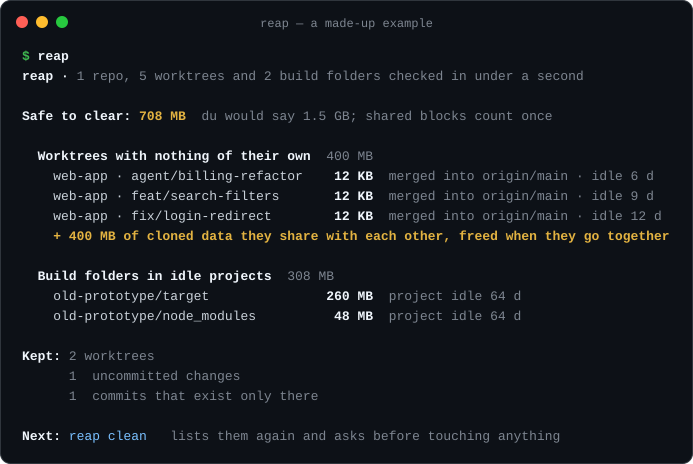
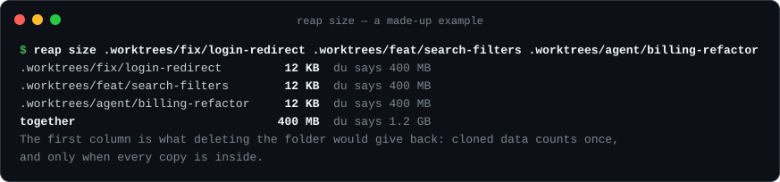

reap.
Clear the git worktrees your coding agents left behind, but only the ones that are really finished.
brew install johnmikel/tap/reap
On one real Mac with 251 worktrees, du said 74 GB could be cleared. reap measured 23 GB.
Only finished work
No uncommitted changes, every commit merged, no env file of its own, nothing running inside, idle for days.
Real sizes
APFS clones count once, and only when every copy goes. du counts each copy in full.
Nothing deleted outright
Cleared folders go to a dated folder in the Trash. Teams with their own close script can plug it in.
Measure any folder
